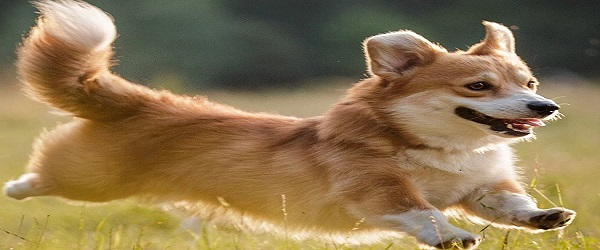

Порода северных шпицеобразных собак. Выведена в 1970-х годах в качестве собаки-компаньона, внешним видом напоминающей хаски, которая, однако, сможет с лёгкостью содержаться в квартире из-за своего малого размера и обходиться без длительных прогулок.
Очаровательная дизайнерская порода, которая получилась благодаря работе селекционеров с мини-пуделем и йоркширским терьером. Йоркипу напоминают маленькие плюшевые игрушки, у них милые мордочки, дружелюбный темперамент.
Одна из самых старых пород среди терьеров. Порода известна как одна из самых ранних рабочих собак Шотландии.Керн-терьеров вывели на западе северной высокой части Шотландии для охоты на кроликов и лисиц. Порода зарегистрирована Клубом собаководства в 1912 году.
Миттельшнауцер – собака из группы шнауцеров, зарекомендовавшая себя отличным сторожем и поисковиком. Отличительные черты породы – квадратный формат туловища, эффектные «брови» и «бородка» из длинного украшающего волоса.
Мастиф – собака с многовековой историей, прошедшая минимальный путь эволюции от волка к домашнему питомцу. Тысячелетиями животных использовали для охраны домашнего скота от хищников, гладиаторских боев, травли крупной дичи и воинской службы. В частности, надзора за пленниками и лобовой атаки на противника.При всей своей выдержке и внешнем спокойствии, мастиф – порода охранная. Поэтому доля агрессии будет в каждом из ее подвидов.
Благодаря своему интеллекту, развитому обонянию и слуху, а также высокой обучаемости, собаки привлечены во многие сферы нашей жизни. В наше время все породы этих четвероногих условно делят на служебные, охотничьи, спортивно-служебные и декоративные.С древних времен собаки сопровождали воинов в бою, а во время Великой Отечественной войны эти четвероногие бойцы «служили» в советской армии: подрывали танки, проводили разведку и искали мины.Собаки считаются лучшими охранниками. Даже не обученное специально животное будет охранять жилище человека и защищать людей, потому что такой инстинкт у собаки в крови. Сейчас служебные собаки активно применяются в армии и полиции, патрулируя и охраняя различные объекты.Существуют собаки-спасатели, помогающие отыскивать и спасать людей во время различных аварий и катастроф.Настоящими товарищами и помощниками для своих хозяев – людей, с ограниченными физическими возможностями, становятся собаки-поводыри.